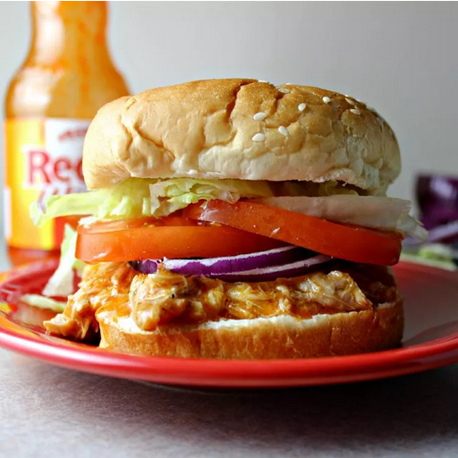

Slow Cooker Buffalo Chicken Sandwiches
This crockpot Buffalo chicken is great for hearty sandwiches that will please those who love Buffalo chicken
wings. This
recipe is perfect for those days spent watching football. I like to top these with blue cheese or ranch
dressing.

Ingredients
- 4 skinless, boneless chicken breast halves
- 1 (17.5 fluid ounce) bottle Buffalo wing sauce, divided
- ½ (1 ounce) package dry ranch salad dressing mix
- 2 tablespoons butter
- 6 hoagie rolls, split lengthwise